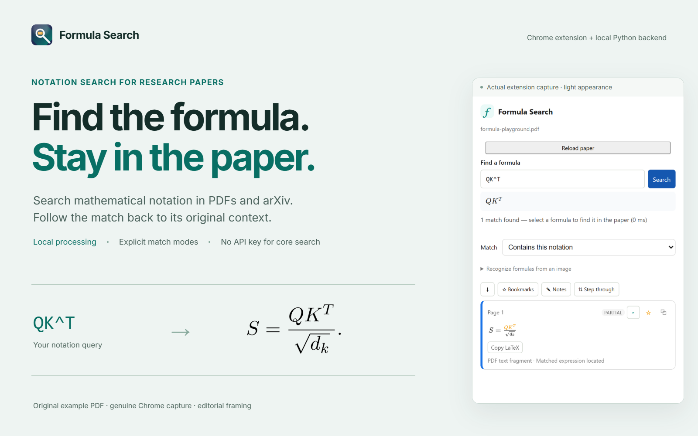
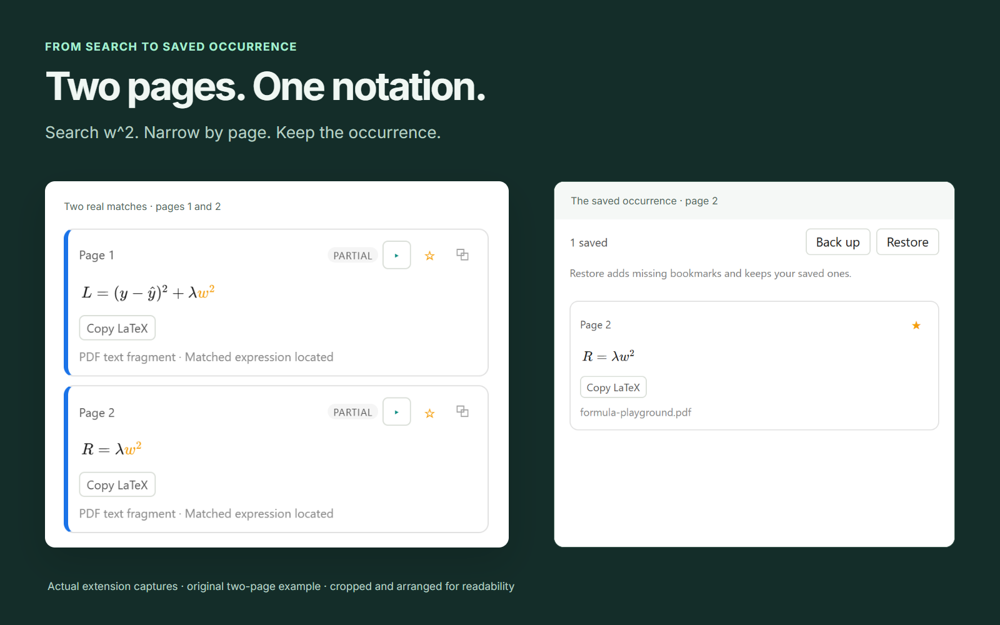
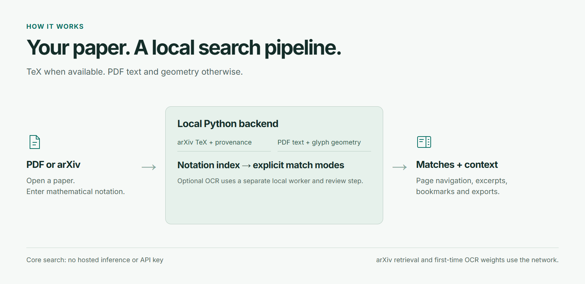
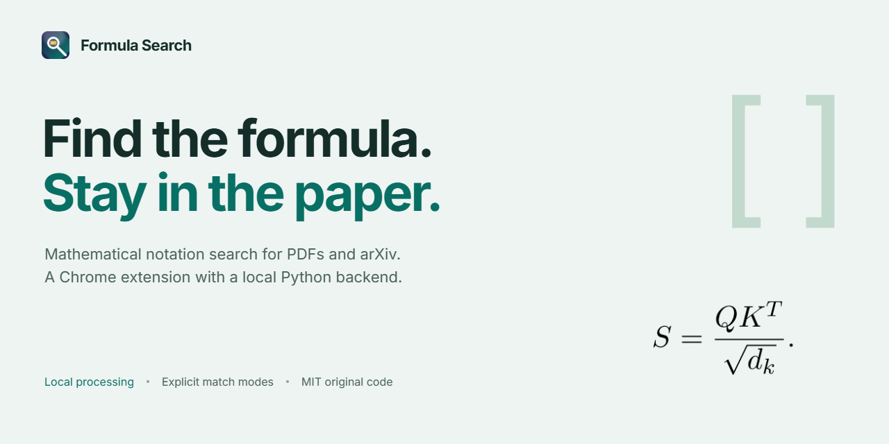

Find the formula.
Stay in the paper.
The project presentation: a real notation search, original PDF context, and the workflow from two matches to one saved occurrence.
The film uses actual extension and backend responses. Screens are recorded in an extension tab; titles, crops, and camera reframing are editorial. Chrome 158 uses page navigation and PDF excerpts. Product actions play at normal speed. No OCR is demonstrated.
README hero
A real numerator query, its original equation, and the actual result.

From search to saved occurrence
Enlarged product captures make both locations and the saved page-2 occurrence readable.

The local search pipeline
A conceptual diagram explaining the source and PDF extraction paths.

Individual product captures
 Light appearance
Light appearance


Social preview
1280 × 640, ready for the repository's social image.

Transcript
- An original equation introduces repeated notation.
- Search w^2 to find occurrences on pages 1 and 2.
- Filter to page 2.
- Save the occurrence as a bookmark.
- Inspect the original PDF excerpt and navigate to page 2.
- Compare close-ups of the actual results and bookmark.
- See the dark appearance and the README setup route.